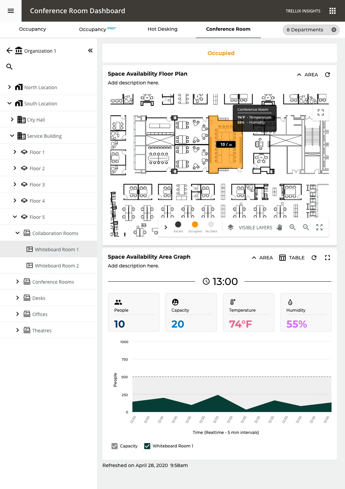

A building that keeps an eye on itself
Every light in the ceiling is also a sensor. Together they notice when a room fills up, when a floor goes quiet, and how much energy a space is burning through. The catch: all of that used to land in a monthly report. True, but useless, like getting last week's weather forecast.
I designed the whole thing: the installer's first setup, the live floor map, and the big-picture view a manager scans across every building. My job was to take that firehose of signals and turn it into one window that four very different people could each just read.
It only counts if it gets installed
There's no smart building until the hardware is actually on the ceiling. Which means the first design problem had nothing to do with charts or dashboards. It was making the physical system genuinely easy to install.
The same signal, shaped to each person
It starts with the installer who brings a floor to life. From there the exact same signal becomes the manager's floor-and-room view, the analyst's building-by-building comparison, and a simple map of what's free for anyone just hunting a seat.


From install to insight
The work gets handed from one person to a completely different one, like a relay race. I mapped the whole thing start to finish, and that's how each step earned its design.
One question, top to bottom
Say a manager asks the simplest question in the world: why is this floor so empty? Here's every layer working to answer it, from the screen in their hand all the way down to a sensor in the ceiling.
From a map of devices to a map of places
Under the hood, the system knew every single light fixture. But nobody runs a building thinking about light fixtures. They think in floors, rooms, and questions about them. So I built the whole app around places instead: each screen shows just enough, and the chart changes to match the question you're asking.
A spreadsheet becomes a living map
Zoom into a floor and the bar charts give way to a heat map, because down here, getting a feel for the space beats comparing numbers. Tap any room to see who's in it right now, how full it is, and where it's headed.

Built for how a floor actually works
From the employee grabbing a free seat, to the manager ranking rooms by how much they get used, to the analyst comparing whole buildings: it's all the same map of places, just seen from a different height.
The shape of it
I don't have invented success metrics for this one. What follows is the shape of how it's built to be read.